Our Work
Let our projects speak for themselves. Check out the transformations we've delivered — complete remodels, exterior upgrades, outdoor living builds, and more.
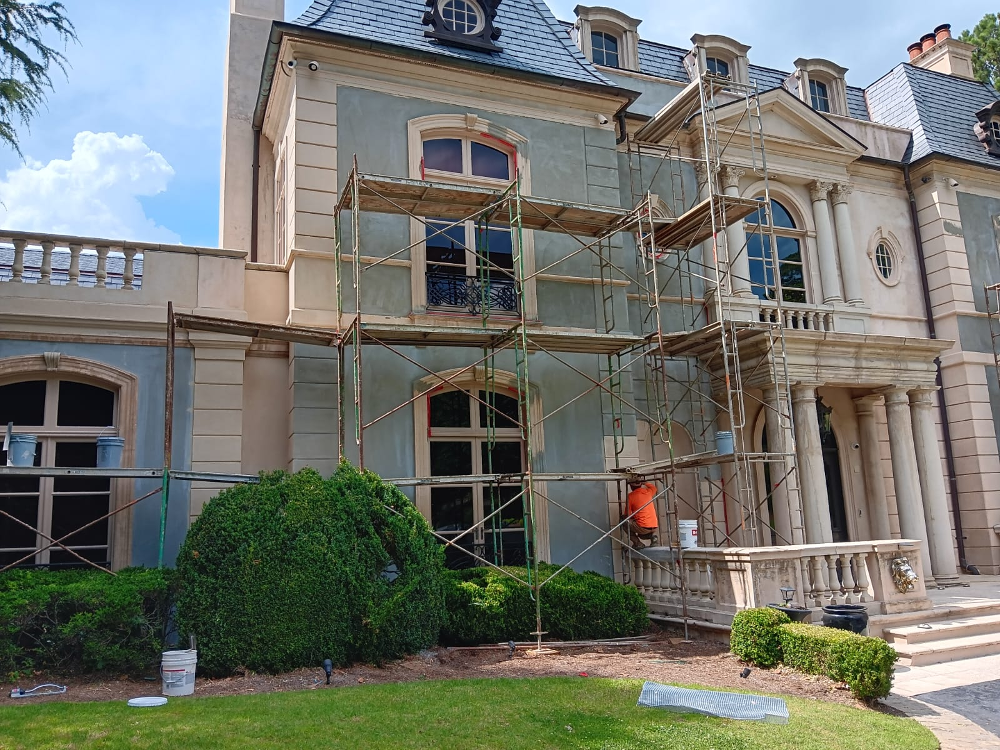
Before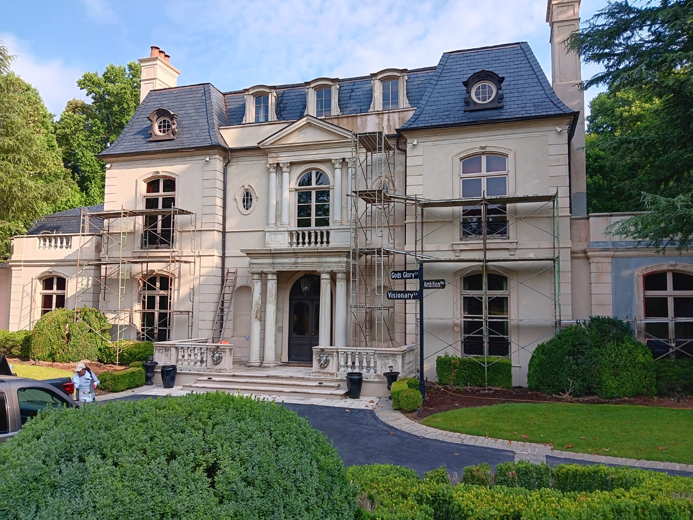
AfterThis project showcases a complete exterior modernization, transforming a dated, multi-toned facade into a seamless, high-end masterpiece. Our team unified the architectural elements with a premium, limestone-inspired finish — elevating the home's regal character while ensuring superior weather protection and curb appeal.
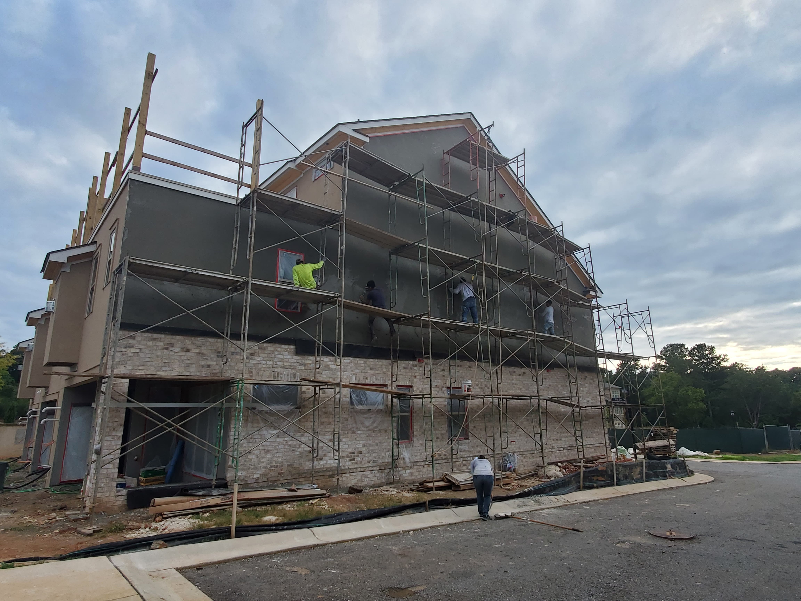
In Progress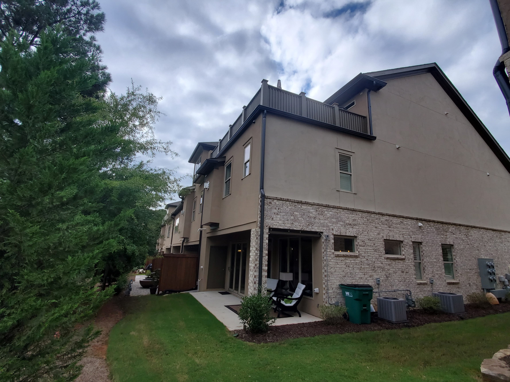
AfterMost stucco damage starts behind the wall. Our remediation process doesn't just patch the surface — we expose the structure, replace any rotted wood, and install premium waterproofing to protect your home for decades to come.
Is your home showing these signs? Contact us today for a professional structural assessment.
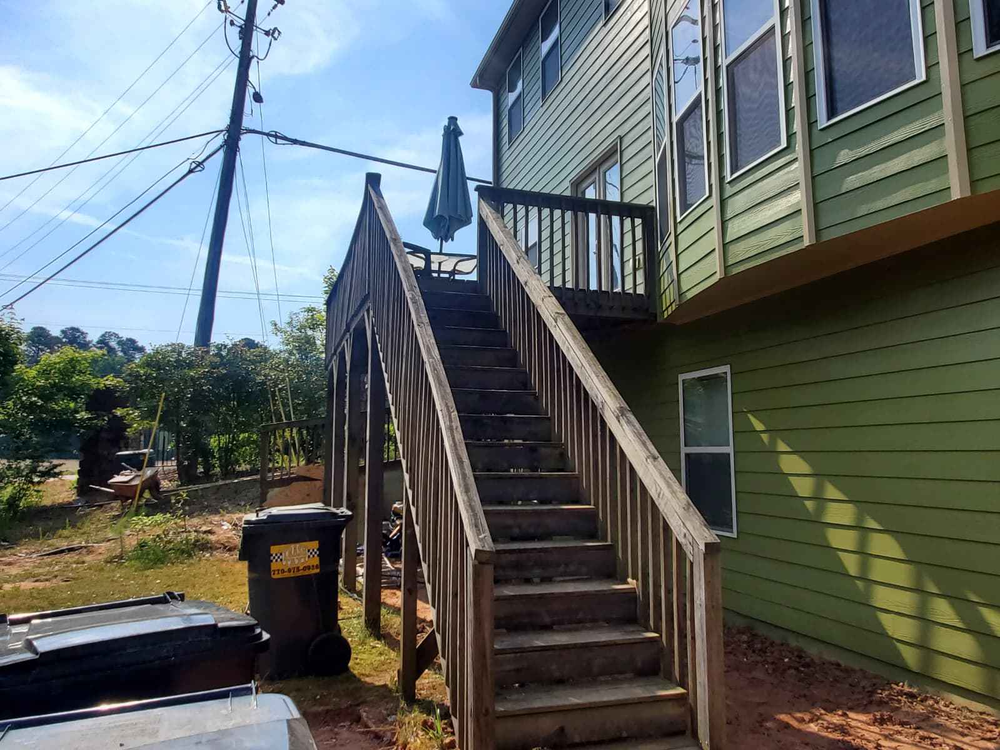
Before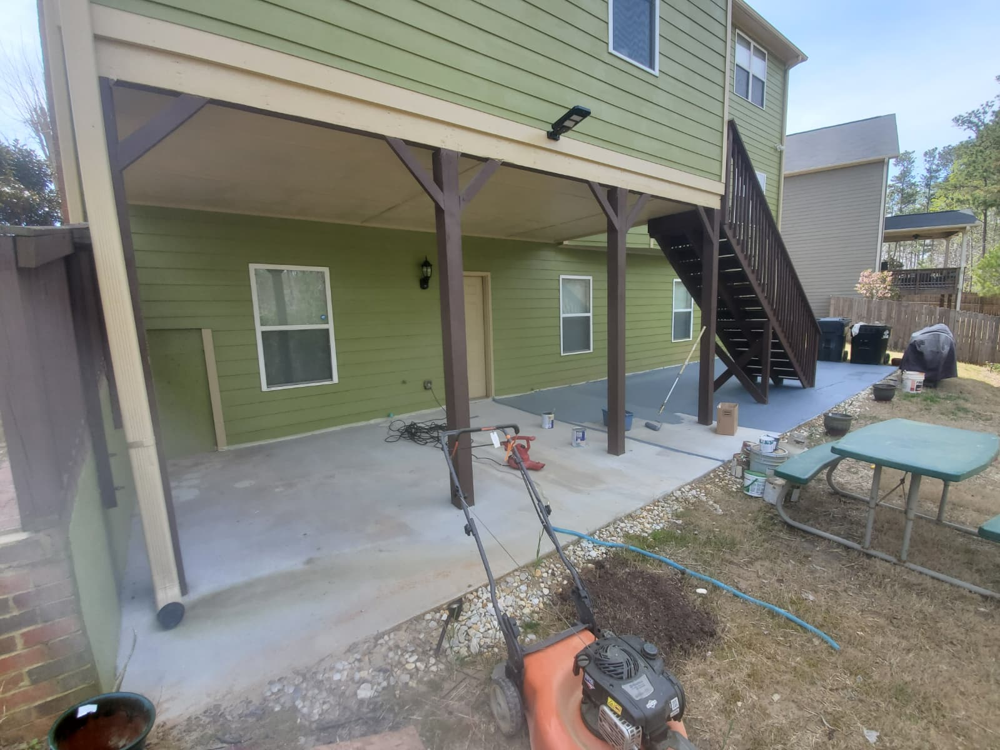
In Progress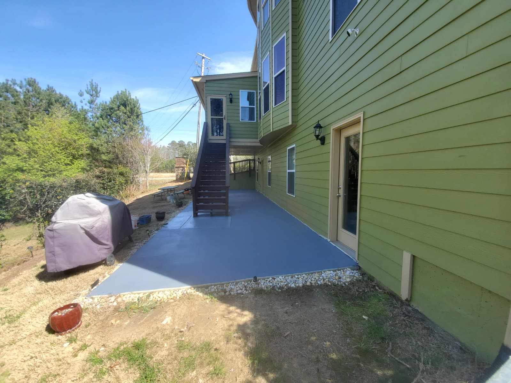
AfterTurn your under-utilized backyard into a premium outdoor retreat. These images showcase our ability to transform raw concrete into a sleek, durable, and weather-resistant living space.
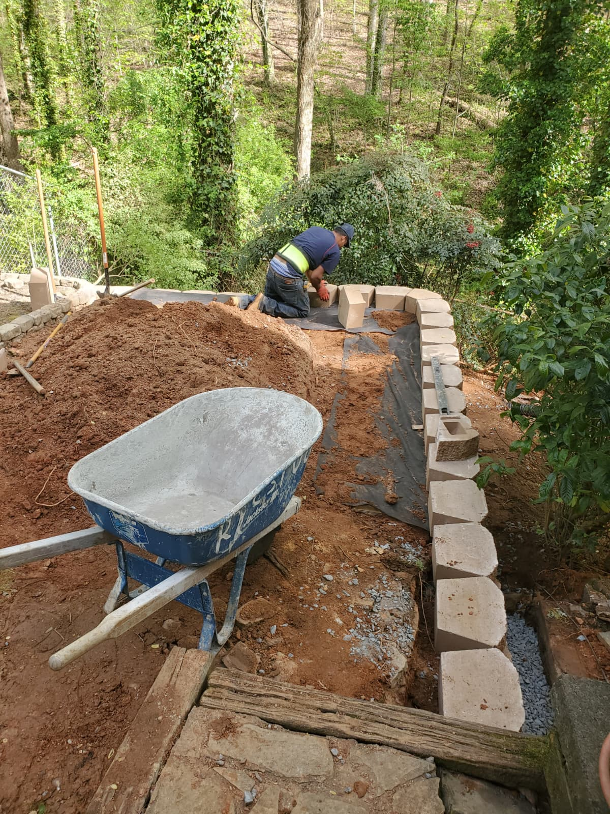
Before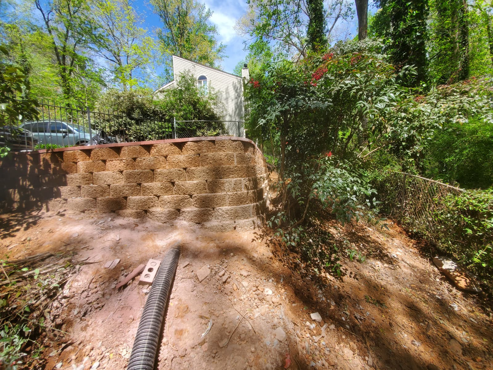
AfterProtect your landscape and reclaim your yard with a custom-built retaining wall. Our team specializes in structural solutions that turn difficult slopes into functional, beautiful outdoor spaces.
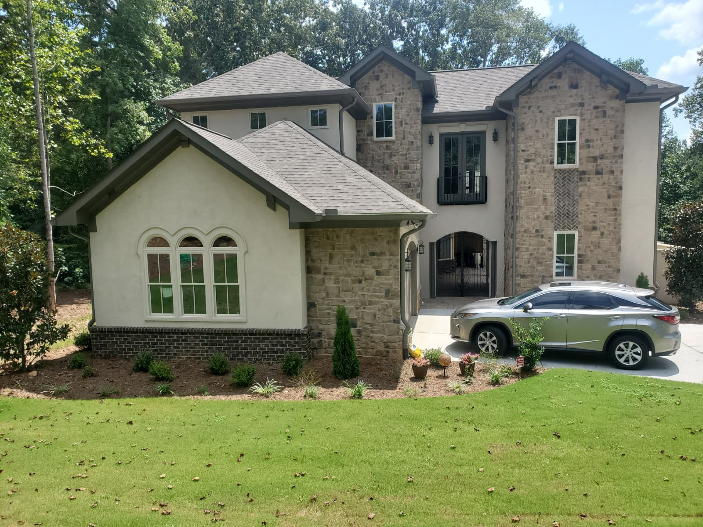
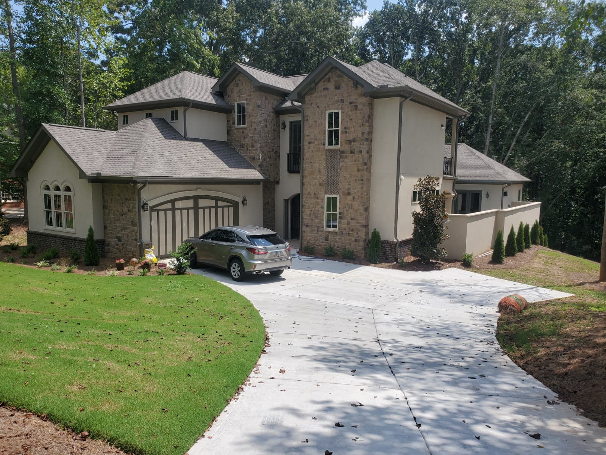
From intricate stonework to flawless stucco finishes, we bring luxury visions to life with precision and durability. Our multi-trade capabilities mean a single crew can deliver a fully coordinated exterior — no subcontractor hand-offs, no mismatched finishes.
Need a retouch, repair, reclamation, or a full transformation? Give us a call and get your elite upgrade today.